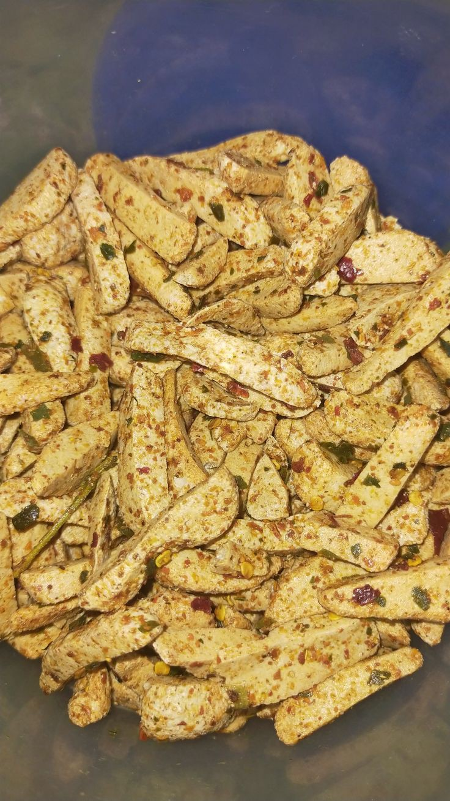
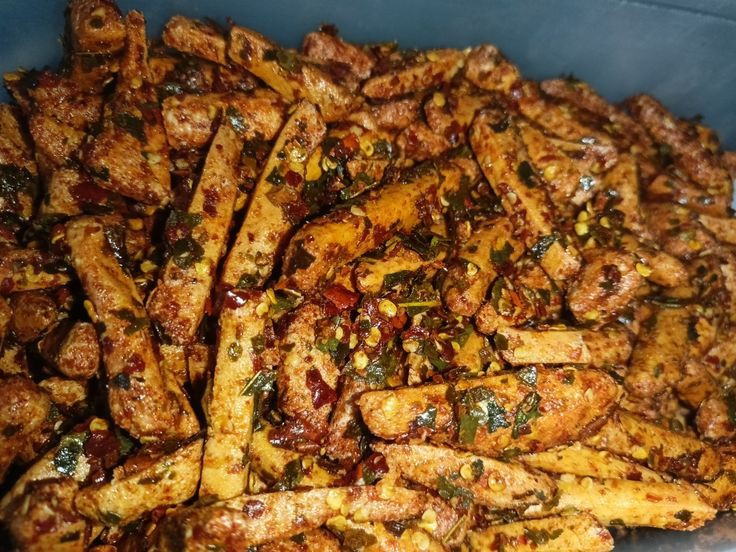
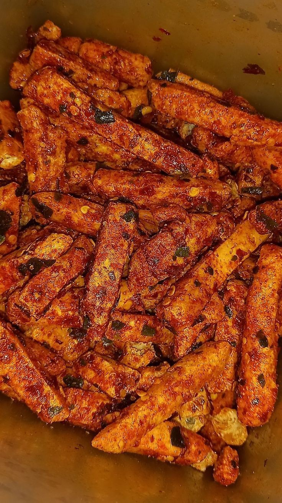

Baso Goreng (Original)
Rp 7.000

Baso Goreng (Pedas-Asin)
Rp 7.000

Baso Goreng (Balado)
Rp 7.000
Rp 7.000
Rp 7.000
Rp 7.000
Total: Rp 0
("Silahkan melakukan konfirmasi pemesanan melalui whatsapp")
MForum OSIS Jawa Barat adalah organisasi binaan Dinas Pendidikan Provinsi Jawa Barat, Suatu wadah perkumpulan dan pengembangan kualitas diri para pelajar tingkat SMA/SMK/MA Se-Derajat yang tergabung dalam kepengurusan OSIS ditiap sekolah dengan Visi “menjadi inkubator pemimpin muda Jawa Barat berkarakter STRONG untuk Indonesia Emas Tahun 2045” FOJB ini Didirikan oleh 6 anak muda hebat asli Jawa Barat sejak 5 Januari 2013 menjadikan FOJB sebagai Perkumpulan OSIS tertua di Indonesia. Proses pengukuhannya secara resmi dilakukan oleh Gubernur Jawa Barat saat itu. Dewasa kini Ikatan Alumni FOJB--atau kerap disebut IKAL-- telah mencapai 15.000 anggota yang tersebar di berbagai posisi strategis di Jawa Barat bahkan Luar Negeri. Kedepannya Forum OSIS Jawa Barat akan terus berbenah hingga alumni-alumni nya dapat terus berkarya dan bermanfaat untuk masyarakat Indonesia.
Merupakan sebuah forum untuk Organisasi SISWA Intra Sekolah se-Jawa Barat untuk bagian / regional dari wilayah 10, yaitu Kota Cirebon, Kab.Cirebon, Kab.Kuningan, dimana ia di kelola oleh Koordinator Wilayah - BPH - Koordinator Daerah - Hingga seluruh pengurus wilayah, dimana saat ini sudah memasuki generasi ke-12
IG : @fojbwilayah10
"Pengembang/Developer Website Ini
Merupakan seorang siswa yang duduk di bangku kelas 11 di SMK PERTIWI KUNINGAN dengan program keahlian / kejuruan "Rekayasa Perangkat Lunak" dan seorang Front-End developer berusia 16 Tahun
Alamat: Cirendang, Kuningan, Jawa Barat
Bug Report :
Whatsapp